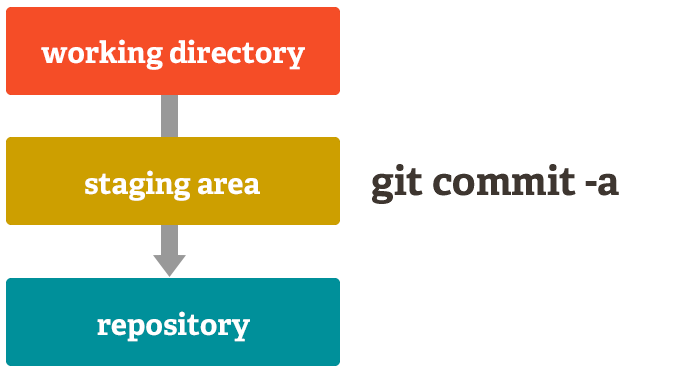

<!doctype html>
<html lang="en">
    <head>
        <meta charset="utf-8">
        <title>Git 101 @ 30 mins.</title>
        <link rel="stylesheet" href="./css/reveal.css">
        <link rel="stylesheet" href="./css/theme/league.css" id="theme">
        <link rel="stylesheet" href="./css/highlight/zenburn.css">
        <link rel="stylesheet" href="./css/print/paper.css" type="text/css" media="print">

    </head>
    <body>

        <div class="reveal">
            <div class="slides"><section ><section data-markdown><script type="text/template">

<h1 style="font-size: 72px">
	Git 101 @ 30 mins.
</h1>
<br />

JunYuan Yan

<div align="right">
  <font size="3">
forked from [Git , Denny Huang ](http://denny.one/git-slide)
  </font>
</div>
</script></section><section data-markdown><script type="text/template">
# About me

* i-cube Lab @ NUU
* R&D @ [BotPartner.me](http://www.botpartner.me)
* contact me : jyyan.tw@gmail.com
* [blog](http://blog.jyyan.info) , jyyan @ [github](http://github.com/jyyan)
</script></section></section><section ><section data-markdown><script type="text/template">
# Why Git
Think different !
</script></section><section data-markdown><script type="text/template">
# 版本控制類型
</script></section><section data-markdown><script type="text/template">
### 本地端版本控制

<div align="center">
  <br />
  
</div>
</script></section><section data-markdown><script type="text/template">
### 集中式版本控制系統

<div align="center">
  <br />
  
</div>
</script></section><section data-markdown><script type="text/template">
### 分散式版本控制系統

<div align="center">
  
</div>
</script></section><section data-markdown><script type="text/template">
<div align="center">
  
</div>
<div align="right">
  <font size="4">
	<a href="http://zoomq.qiniudn.com/ZQScrapBook/ZqFLOSS/data/20081210180347/" target="_blank">圖片來源</a>
  </font>
</div>
</script></section></section><section ><section data-markdown><script type="text/template">
### 事前準備

* 註冊 [GitHub](http://github.com) 帳號
* 確認已安裝 Git
    * [Git for windows](https://git-for-windows.github.io/)
	* 在 Terminal 輸入 `git` 確認
	* `sudo apt install git`
	* `sudo dnf install git`
* 選擇編輯器 (vim, emacs, gedit)
</script></section><section data-markdown><script type="text/template">
### 環境設定 - 個人資料 / 偏好設定
```
git config --global user.email "you@example.com"

git config --global user.name "Your Name"

git config --global color.ui true

#換為你慣用的文字編輯器
git config --global core.editor vim
```
</script></section><section data-markdown><script type="text/template">
### 環境設定 - 設定別名

```
git config --global alias.co checkout

git config --global alias.br branch

git config --global alias.ci commit

git config --global alias.st status

git config --global alias.lg "log --color --graph --all --pretty=format:'%Cred%h%Creset -%C(yellow)%d%Creset %s %Cgreen(%cr) %C(bold blue)<%an>%Creset' --abbrev-commit --"
```
</script></section><section data-markdown><script type="text/template">
# config
.gitconfig

Why `--global`?

```
cat ~/.gitconfig
[user]
	name = JunYuan Yan
	email = jyyan.tw@gmail.com
[color]
	ui = true
```
[config_example.sh](example/config_example.sh)
</script></section></section><section ><section data-markdown><script type="text/template">
# Practice

Create a new repo on GitHub
</script></section><section data-markdown><script type="text/template">
# 公開 / 私有
Public / Private
<div align="center">
  <a href="https://education.github.com/pack" target="_blank">Student Developer Pack</a>
</div>
</script></section><section data-markdown><script type="text/template">
# 說明文件
README.md
<div align="center">
  <a href="https://github.com/adam-p/markdown-here/wiki/Markdown-Cheatsheet" target="_blank">Markdown Cheatsheet</a>
  <a href="https://guides.github.com/features/mastering-markdown/" target="_blank">Mastering Markdown</a>
</div>
</script></section><section data-markdown><script type="text/template">
# 設定不監控的文件
.gitignore
<div align="center">
  <a href="https://github.com/github/gitignore" target="_blank">collection of useful .gitignore templates</a><br />
  <a href="https://git-lfs.github.com/" target="_blank">Git Large File Storage</a>
</div>
</script></section><section data-markdown><script type="text/template">
# License
<div align="center">
  <a href="http://www.openfoundry.org/tw/licenses" target="_blank">授權條款介紹 - OpenFoundry</a>
</div>
</script></section></section><section  data-markdown><script type="text/template">
# Practice
Delete the repository
</script></section><section  data-markdown><script type="text/template">
# Practice
Create an new repo without initialization
</script></section><section ><section data-markdown><script type="text/template">
# Practice
Create a new local repository
</script></section><section data-markdown><script type="text/template">
<h1 style="font-size: 72px">
  <code>git help &lt;command&gt;</code>
</command>
</script></section><section data-markdown><script type="text/template">
# init
```
git init
````
</script></section></section><section ><section data-markdown><script type="text/template">
# Practice
Add file to staging area
</script></section><section data-markdown><script type="text/template">
<div align="center">
  
</div>
<div align="right">
  <font size="4">
	<a href="http://git-scm.com/about/staging-area" target="_blank">圖片來源</a>
  </font>
</div>
</script></section><section data-markdown><script type="text/template">
# create README file

```
touch README.md
```
</script></section><section data-markdown><script type="text/template">
# how are you?

```
git status
```
</script></section><section data-markdown><script type="text/template">
### Add file to staging area
```
git add README.md

# will stage all unstage files
# Don't do this...
git add .
```
</script></section><section data-markdown><script type="text/template">
# keep
.gitkeep
</script></section><section data-markdown><script type="text/template">
### Unstage file

```
git reset <file>
```
</script></section></section><section ><section data-markdown><script type="text/template">
# Practice
### Commit to repository
</script></section><section data-markdown><script type="text/template">
### Before commit

```
git status

#未監控的檔案
git diff

#已監控的檔案
git diff --cached
```
</script></section><section data-markdown><script type="text/template">
### Commit

* `git commit`

* `git commit -m "first commit"`
</script></section><section data-markdown><script type="text/template">
# 何時該 commit？
</script></section><section data-markdown><script type="text/template">
<h1 style="font-size: 72px">
  commit log 怎麼寫？
</h1>
<div align="center">
  <a style="font-size: 30px" href="./img/yo.png" target="_blank">yo</a>
</div>
<div align="right">
  <a style="font-size: 15px" href="http://www.reddit.com/r/shittyprogramming/comments/1skq3s/my_buddy_is_a_phenomenal_programmer_but_really/" target="_blank">圖片來源</a>
</div>
</script></section><section data-markdown><script type="text/template">
# DON'T ...
```
# -a, --all
#   Tell the command to automatically stage files
#   that have been modified and deleted, but
#   new files you have not told Git about are not affected.

git commit -a
```
</script></section><section data-markdown><script type="text/template">
<div align="center">
  
</div>
<div align="right">
  <font size="4">
	<a href="http://git-scm.com/about/staging-area" target="_blank">圖片來源</a>
  </font>
</div>
</script></section></section><section ><section data-markdown><script type="text/template">
# Practice
Show commit message
</script></section><section data-markdown><script type="text/template">
### Show commit log

* `git log`

* `git show <revisions>`
</script></section><section data-markdown><script type="text/template">
##  SPECIFYING REVISIONS

```
<sha1>, e.g. dae86e1950b1277e545cee180551750029cfe735, dae86e
<refname>, e.g. master, heads/master, refs/heads/master
<refname>@{<date>}, e.g. master@{yesterday}, HEAD@{5 minutes ago}
```

<div align="center">
  <a href="https://www.kernel.org/pub/software/scm/git/docs/gitrevisions.html" target="_blank">gitrevisions(7) Manual Page</a>
</div>
</script></section></section><section ><section data-markdown><script type="text/template">
# Practice
Untrack / Rename file
</script></section><section data-markdown><script type="text/template">

Remove file
  ```
  git rm <file>
  ```
Untrack file
  ```
  git rm --cached <file>
  ```
Rename file
  ```
  git mv <file>
  ```
</script></section></section><section ><section data-markdown><script type="text/template">
# Practice
Back to the past

生命不能重來，但 Git 可以
</script></section><section data-markdown><script type="text/template">
Checkout to previous version

```
git checkout <revision>
```

Checkout file from previous version

```
git checkout <revision> <file>
```
</script></section><section data-markdown><script type="text/template">
### Stash files
```
git stash

git stash save "message"

git stash list

git stash pop

git stash show -p <revision>
```
[ref Stashing](https://git-scm.com/book/zh-tw/v1/Git-%E5%B7%A5%E5%85%B7-%E5%84%B2%E8%97%8F-Stashing)</script></section><section data-markdown><script type="text/template">
### Reset to previous version

```
git reset <revision>

git reset --hard <revision>
```
[ref rebase -i, reset, revert](https://blog.yorkxin.org/2011/07/29/git-rebase)
</script></section><section data-markdown><script type="text/template">
### Revert commit

```
git revert <revision>
```
[ref rebase -i, reset, revert](https://blog.yorkxin.org/2011/07/29/git-rebase)
</script></section><section data-markdown><script type="text/template">
### Remove untracked files

* `git clean -f`

* `git clean -d`
</script></section></section><section ><section data-markdown><script type="text/template">
# Practice
Push to remote server
</script></section><section data-markdown><script type="text/template">
### Add remote repo

* `git remote add origin https://github.com/denny0223/workshop.git`

* `git remote`

* `git remote -v`

* `git remote show origin`
</script></section><section data-markdown><script type="text/template">
<div align="center">
  
</div>
<div align="right">
  <font size="4">
	<a href="http://zoomq.qiniudn.com/ZQScrapBook/ZqFLOSS/data/20081210180347/" target="_blank">圖片來源</a>
  </font>
</div>
</script></section><section data-markdown><script type="text/template">
### List branches

* `git branch`

* `git branch -a`

* `git branch -v`

* `git branch -vv`
</script></section><section data-markdown><script type="text/template">
### Push to remote repo

* `git push -u origin master`

* `git push origin master`

* `git push`

* <a href="http://stackoverflow.com/a/13148313" target="_blank">push.default</a>
</script></section><section data-markdown><script type="text/template">
### Cache https password

`git config --global credential.helper cache`

`git config --global credential.helper "cache --timeout=3600"`

<br />
<div align="right">
<a href="http://stackoverflow.com/questions/5343068/is-there-a-way-to-skip-password-typing-when-using-https-github/5343146#5343146">more</a>
</div>
</script></section></section><section ><section data-markdown><script type="text/template">
# Practice
Clone your repo via ssh
try to commit and push
</script></section><section data-markdown><script type="text/template">
# `git clone`
</script></section><section data-markdown><script type="text/template">
Please make sure you have the correct access rights
and the repository exists.
</script></section><section data-markdown><script type="text/template">
<h1 style="font-size: 75px">
  <a href="https://help.github.com/articles/generating-ssh-keys" target="_blank">Generating SSH keys</a>
</h1>
</script></section></section><section ><section data-markdown><script type="text/template">
# Practice
Pull from remote repo
Add a new commit at remote via https repo.
</script></section><section data-markdown><script type="text/template">
# PULL

```
# git fetch + git merge
git pull

# git fetch + git merge + git rebase <remote> <branch>
git pull --rebase <remote name> <branch name>
```
### ref:
* [pull rebase](https://ihower.tw/blog/archives/3843)
* [pull with rebase](http://gitready.com/advanced/2009/02/11/pull-with-rebase.html)
</script></section></section><section ><section data-markdown><script type="text/template">
# Practice
Resolving conflict
</script></section><section data-markdown><script type="text/template">
<h1 style="font-size: 72px">
  <code>git mergetool</code>
</h1>
</script></section><section data-markdown><script type="text/template">
# Branch
</script></section><section data-markdown><script type="text/template">
<div align="center">
  
</div>
</script></section><section data-markdown><script type="text/template">
<a href="http://pages.github.com/" target="_blank">
  <h1>GitHub Pages</h1>
</a>
</script></section><section data-markdown><script type="text/template">
# Practice
Create a branch
</script></section><section data-markdown><script type="text/template">
Create a branch

* `git branch <branch name>`

* `git checkout -b <branch name>`
</script></section></section><section ><section data-markdown><script type="text/template">
# Practice
commit and push new branch to remote
</script></section><section data-markdown><script type="text/template">
### Push when local and remote branch name difference

* `git push <remote> <local_branch_name>:<remote_branch_name>`
</script></section><section data-markdown><script type="text/template">
# Git Flow
<h2>
  <a href="http://nvie.com/posts/a-successful-git-branching-model/" target="_blank">A successful Git branching model</a>
</h2>
</script></section><section data-markdown><script type="text/template">
<div align="center">
  
</div>
</script></section></section><section ><section data-markdown><script type="text/template">
# Practice
merge branches
</script></section><section data-markdown><script type="text/template">
### Merge

* `git merge <branch>`

* `git merge --no-ff <branch>`
</script></section></section><section ><section data-markdown><script type="text/template">
# Practice
Delete branches
</script></section><section data-markdown><script type="text/template">
Delete branch

* `git branch -d <branch>`

* `git branch -D <branch>`

* `git push <remote> :<branch>`

* `git fetch -p`
</script></section><section data-markdown><script type="text/template">
Move branch refs

* `git branch -f <branch>`

* `git branch -f <branch> <revision>`
</script></section></section><section ><section data-markdown><script type="text/template">
# Practice
Trace log
</script></section><section data-markdown><script type="text/template">
### More about diff

* `git diff <revision>`

* `git diff master@{2014-07-01}`

* `git diff master@{"1 month ago"}`
</script></section><section data-markdown><script type="text/template">
### More about git log

* `git log -p --stat`

* `git log --oneline`

* `git log --graph`

* `git log --abbrev-commit`

* `git log --pretty=%an`

* `git whatchanged`
</script></section><section data-markdown><script type="text/template">
### Limit

* `git log --author="Denny Huang"`

* `git log --since={2014-07-01} --until="1 week ago"`

### search by regex

* `git log -p -i -G 'regex'`
</script></section><section data-markdown><script type="text/template">
### Who wrote this code?

* `git blame <filepath>`
</script></section><section data-markdown><script type="text/template">
### Tag

* `git tag <tagname>`

* `git push <remote> <tagname>`

* `git tag -d <tagname>`

* `git push <remote> :<tagname>`

* <a href="https://help.github.com/categories/releases/" target="_blank">Release on GitHub</a>
</script></section><section data-markdown><script type="text/template">
### Rebase

接枝技

* `git rebase`
[ref rebase -i, reset, revert](https://blog.yorkxin.org/2011/07/29/git-rebase)
</script></section><section data-markdown><script type="text/template">
### Cherry-pick

* `git cherry-pick <revision>`
</script></section><section data-markdown><script type="text/template">
### Patch file

* `git format-patch`

* `git am <patch_file>`
</script></section><section data-markdown><script type="text/template">
### Submodule

* `git submodule add <repo>`

* `git submodule init`

* `git submodule update`

* `git submodule foreach git pull origin master`
</script></section><section data-markdown><script type="text/template">
### Patch commit

* `git add --patch`

* `git commit --patch`
</script></section></section><section ><section data-markdown><script type="text/template">
# Practice
Modify you commit
</script></section><section data-markdown><script type="text/template">
### Modify commit history

* `git commit --amend`

* `git commit --amend --date="Mar 15 00:00 2014"`

* `git rebase -i <revision>`
</script></section><section data-markdown><script type="text/template">
### Useful skill

* `git reflog`

* `git fsck`
</script></section></section><section  data-markdown><script type="text/template">
### Hosting a Git server

* bare repo

* <a href="http://gogs.io/" target="_blank">Gogs</a>

* <a href="https://about.gitlab.com/" target="_blank">GitLab</a>
</script></section><section  data-markdown><script type="text/template">
# Issue tracking system
</script></section><section  data-markdown><script type="text/template">
# Continuous Integration (CI)
</script></section><section  data-markdown><script type="text/template">
<h1 style="font-size: 68px">
  剩下就是你們的事了
</h1>
</script></section><section ><section data-markdown><script type="text/template">
### Something useful

* <a href="http://pages.github.com/" target="_blank">GitHub Pages</a>

* <a href="https://github.com/k4rthik/git-cal" target="_blank">git-cal</a>

* <a href="http://pcottle.github.io/learnGitBranching/" target="_blank">Learn Git Branching</a>

* <a href="https://github.com/JuanitoFatas/git-style-guide/blob/master/README.md" target="_blank">git-style-guide</a>
</script></section><section data-markdown><script type="text/template">
### Something useful (cnt.

* <a href="https://guides.github.com/" target="_blank">GitHub Guides</a>

* <a href="https://github.com/jlord/git-it/blob/master/README-zhtw.md" target="_blank">Git-it</a>

* <a href="http://onlywei.github.io/explain-git-with-d3/" target="_blank">Visualizing Git Concepts with D3</a>

### Just for fun

* <a href="https://github.com/gelstudios/gitfiti" target="_blank">gitfiti</a>
</script></section><section data-markdown><script type="text/template">
### Resources

* <a href="http://git-scm.com/book" target="_blank">Pro Git</a>

* <a href="http://git-scm.com/book/zh-tw" target="_blank">Pro Git (zh-tw)</a>

* <a href="http://ihower.tw/git/" target="_blank">版本控制系統 Git 精要</a>

* <a href="http://www-cs-students.stanford.edu/~blynn/gitmagic/intl/zh_tw/" target="_blank">Git Magic</a>
</script></section><section data-markdown><script type="text/template">
### Resources (cnt.

* <a href="http://backlogtool.com/git-guide/en/" target="_blank">Git Beginner&#39;s Guide for Dummies</a>

* <a href="http://backlogtool.com/git-guide//tw/" target="_blank">連猴子都能懂的Git入門〜掌握版本控制〜</a>

* <a href="http://www.slideshare.net/ihower/git-40877359" target="_blank">Git 版本控制系統 --- 從微觀到宏觀</a>
</script></section><section data-markdown><script type="text/template">
## 10 year

* <a href="https://www.atlassian.com/git/articles/10-years-of-git/" target="_blank">10 Years of Git</a>

* <a href="http://ithome.com.tw/news/95088" target="_blank">Git 十歲了！Git 之父 Linus Torvalds 說古，大談 Git 的起源</a>
</script></section></section><section  data-markdown><script type="text/template">
<h1 style="font-size: 72px">
  Thanks for listening!
</h1>

<br /><br /><br />
<div align="center">
  
</div>
<h2 style="font-size: 18px">
本投影片採用<a href="http://creativecommons.org/licenses/by-sa/3.0/tw/" target="_blank">創用 CC「姓名標示—相同方式分享 3.0 台灣」授權條款</a>
</h2>

</script></section></div>
        </div>

        <script src="./lib/js/head.min.js"></script>
        <script src="./js/reveal.js"></script>

        <script>
            function extend() {
              var target = {};
              for (var i = 0; i < arguments.length; i++) {
                var source = arguments[i];
                for (var key in source) {
                  if (source.hasOwnProperty(key)) {
                    target[key] = source[key];
                  }
                }
              }
              return target;
            }

            // Optional libraries used to extend on reveal.js
            var deps = [
              { src: './lib/js/classList.js', condition: function() { return !document.body.classList; } },
              { src: './plugin/markdown/marked.js', condition: function() { return !!document.querySelector('[data-markdown]'); } },
              { src: './plugin/markdown/markdown.js', condition: function() { return !!document.querySelector('[data-markdown]'); } },
              { src: './plugin/highlight/highlight.js', async: true, callback: function() { hljs.initHighlightingOnLoad(); } },
              { src: './plugin/zoom-js/zoom.js', async: true },
              { src: './plugin/notes/notes.js', async: true },
              { src: './plugin/math/math.js', async: true }
            ];

            // default options to init reveal.js
            var defaultOptions = {
              controls: true,
              progress: true,
              history: true,
              center: true,
              transition: 'default', // none/fade/slide/convex/concave/zoom
              dependencies: deps
            };

            // options from URL query string
            var queryOptions = Reveal.getQueryHash() || {};

            var options = {"transition":"fade"};
            options = extend(defaultOptions, options, queryOptions);
            Reveal.initialize(options);
        </script>
        
    </body>
</html>
